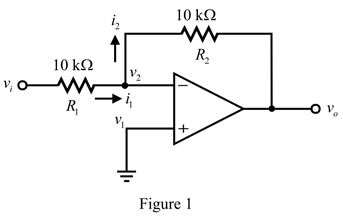

Step 1:
It is given that the particular inverting operational amplifier circuit is an ideal one and having two  resistors. Assume that one
resistors. Assume that one  resistor is in feedback path and one is at input path. Draw the topology of the expected inverting op-amp circuit diagram.
resistor is in feedback path and one is at input path. Draw the topology of the expected inverting op-amp circuit diagram.

Step 2:
From the concept of virtual ground, the potential at inverting terminal is equal to the potential at non-inverting terminal. Since, the given op-amp is an ideal; currents entering into both the terminals are zero.
The voltage at non-inverting terminal is at zero potential. Therefore,

Apply Kirchhoff’s current law at node  .
.

Step 3:
Step 4:
It is given that; the input dc voltage is, 
Write the expression for output voltage using the closed loop gain expression.
Substitute for  and 1 V for
and 1 V for  .
.
Therefore, the resulted output voltage,  is
is  .
.
Step 5:
The resistors are said to be 1% resistors having values somewhere in the range times the nominal value.
The value of input voltage is,
Write the expression for voltage gain.
Substitute  for
for  .
.
Step 6:
Determine the expected range of outputs as follows:
Therefore, the expected range of outputs is .
 for
for  and
and  for
for  in the expression of closed loop voltage gain, G.
in the expression of closed loop voltage gain, G.
 of the amplifier is .
of the amplifier is .